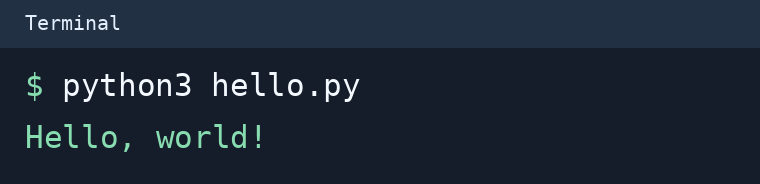
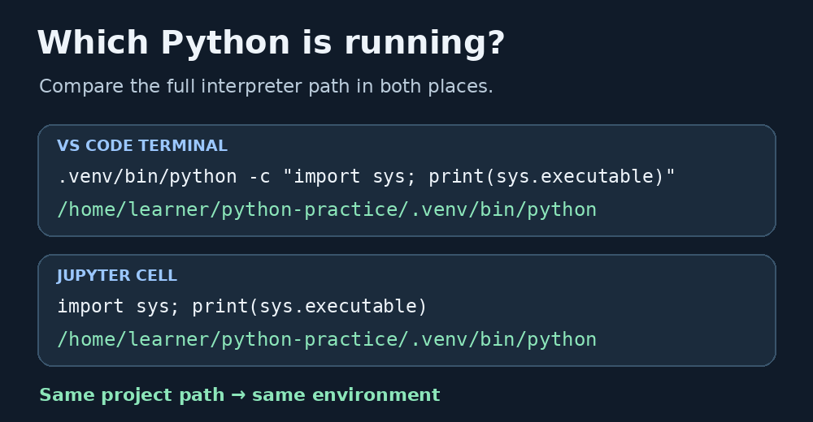

Python setup & first program
Write one line of code and make Python show a message on your screen.
1. Install Python and VS Code
Python runs your code. VS Code is the editor where you write it.
On Windows or Mac, get Python 3 from python.org. On Linux, Python may already be installed. If python3 --version fails in your terminal, install python3 using your system’s software manager. Then install VS Code.
2. Create hello.py
Create a folder named python-practice. In VS Code, use File → Open Folder to open it. In the left panel, click New File and name it hello.py.
print("Hello, world!")Save the file. print() shows the words inside the quotes. The .py ending tells you it’s a Python file.
3. Run your program
In VS Code, choose Terminal → New Terminal. A terminal is where you type commands. Run the first command to check Python, then the second to run your file.
py -3 --version
py -3 hello.pypython3 --version
python3 hello.py
4. Try one change
Change the message to Hello, future coder!. Save the file and run it again. You should see your new message.
Stuck? If the command isn’t found, close and reopen VS Code after installing Python. If Python can’t find the file, check that you opened python-practice and saved the file as hello.py.
Find your project in the terminal
The editor displays files. The terminal starts commands from a current folder. If Python says it can’t open hello.py, first check that the terminal is in the folder that contains it.
| Task | Windows PowerShell | macOS / Linux |
|---|---|---|
| Show current folder | Get-Location | pwd |
| List files | Get-ChildItem | ls |
| Create a folder | mkdir python-practice | mkdir python-practice |
| Enter that folder | Set-Location python-practice | cd python-practice |
| Go up one level | Set-Location .. | cd .. |
If you’ve already created the folder, skip mkdir. List the files again after you enter it. Once hello.py appears, rerun the command from Run your program.
Run the same Python in VS Code and Jupyter
A .py file runs as a script. A .ipynb notebook runs one cell at a time. Its kernel is the running Python process that executes the cells and keeps their variables in memory. The terminal and notebook can choose different Python environments, even when both show the same version.
- Open
python-practicein VS Code. Install the Microsoft Python and Jupyter extensions. In the folder’s terminal, create a project-local.venv, installipykerneland run the script with that environment’s Python. If you already created this environment for this folder, skip the first command.
py -3 -m venv .venv
.\.venv\Scripts\python.exe -m pip install ipykernel
.\.venv\Scripts\python.exe hello.py
.\.venv\Scripts\python.exe -c "import sys; print(sys.executable)"python3 -m venv .venv
.venv/bin/python -m pip install ipykernel
.venv/bin/python hello.py
.venv/bin/python -c "import sys; print(sys.executable)"- Open the Command Palette and choose Create: New Jupyter Notebook. Save it as
check_python.ipynb. Choose Select Kernel, then Python Environments and the project’s.venv. If VS Code shows recent kernels first, choose Select Another Kernel. - Run the following cell. Compare its first line with the terminal path. Both should point to the project’s
.venv.
import sys
print(sys.executable)
print("Hello, world!")
.venv\Scripts\python.exe.Missing kernel or stuck on detection?
Check that the folder containing .venv is open. Rerun the terminal install command above so ipykernel goes into that exact environment. Use Python: Select Interpreter to point VS Code at the executable if the environment is missing, reload the window and select the notebook kernel again. Rerun the cell to verify the path.
For an environment stored elsewhere, run python -m ipykernel install --user --name fde-practice --display-name "Python (FDE practice)" after activating that environment and installing ipykernel in it. Select the named kernel under Jupyter Kernels.
Following the lecture in Google Colab?
Run the same cell in a Colab notebook. It reports the Python used by that notebook’s runtime. It will show a different path in a hosted runtime. Restart the kernel and run all cells in order when you want to check that your notebook works from a clean start.